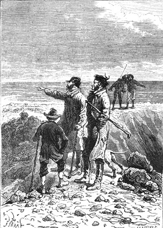
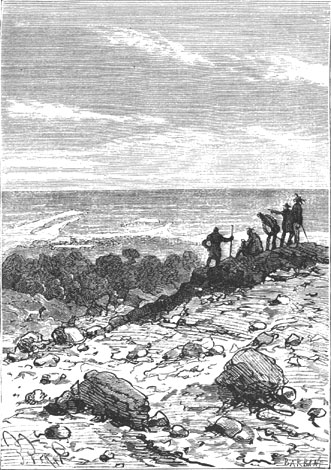

A half hour later Cyrus Smith and Herbert returned to the camp. The engineer merely told his companions that the land on which chance had thrown them was an island and that the next day they would consult. Then each made the best sleeping arrangement he could, and in this cavity of basalt at a height of two thousand five hundred feet above sea level the “islanders” enjoyed a deep sleep on a peaceful night.
The next day, March 30th, after a quick breakfast in which the roasted tragopan was the only dish, the engineer wanted to ascend to the summit of the volcano in order to carefully observe the island on which he and his friends would be imprisoned for life perhaps if this island was situated far from all land or if it was not near the lanes of ships visiting the archipelagos of the Pacific Ocean. This time his companions would follow him in this new exploration. They too wanted to see this island which they would ask to supply all their needs.
It was about seven o’clock in the morning when Cyrus Smith, Herbert, Pencroff, Gideon Spilett and Neb broke camp. No one appeared uneasy about their situation. They doubtless had faith in themselves but it should be noted that the basis of this faith was not the same in Cyrus Smith as in his companions. The engineer had confidence because he felt capable of wresting from this savage nature all that would be necessary for the life of his companions and his own and they feared nothing precisely because Cyrus Smith was with them. They realized this difference. Pencroff, especially since the incident of the rekindled fire, would not despair for an instant even if he found himself on a bare rock if the engineer was with him on this rock.
“Bah!” he said. “We left Richmond without the permission of the authorities! It would be a hell of a thing if sooner or later we did not succeed in leaving a place where no one will certainly detain us.”
Cyrus Smith followed the same path as the day before. They went around the cone by the plateau which formed the shoulder up to the opening of the enormous crevice. The weather was magnificent. The sun rose in a pure sky and its rays enveloped the entire eastern side of the mountain.
They reached the crater. It was just as the engineer had recognized it in the darkness, that is to say a vast crater that extended to a height of a thousand feet above the plateau. From the base of the crevice, broad thick flows of lava had meandered over the sides of the mountain thus marking out the route of the eruptive material into the lower valleys which criss-crossed the northern portion of the island.
The interior of the crater, whose inclination was not more than thirty five to forty degrees, presented no difficulties nor obstacles to climbing. They saw traces of very old lava which probably poured out at the summit of the cone before this lateral crevice opened a new route.
As to the volcanic chimney which established communication between the subterranean levels and the crater, they could not estimate its depth by looking at it since it was lost in obscurity. But there was no doubt about the complete extinction of the volcano.
Before eight o’clock Cyrus Smith and his companions were gathered at the summit of the crater on a conical swelling which puffed up the northern rim.
“The sea! The sea everywhere!” they cried as if their lips could not hold back this word that made islanders of them.
In fact the sea was an immense circular expanse around them. Perhaps on climbing to the summit of the cone Cyrus Smith had hoped to discover some coast, some neighboring island, which he had not been able to see the previous evening in the darkness. But nothing appeared within the limits of the horizon that is to say for a radius of over fifty miles. No land in sight. Not a sail. All this immensity was deserted and the island occupied the center of a circumference that seemed to be infinite.
The engineer and his companions, speechless, immobile, looked over all the points of the ocean for several minutes. Their eyes examined this ocean to its most extreme limits. But Pencroff, who possessed a marvellous power of vision, saw nothing, and certainly if land was lying on the horizon, even if it appeared as an imperceptible vapor, the sailor would undoubtedly recognize it because nature had truly placed two telescopes under his eyebrows.
After the ocean their attention was fixed on the island which they could see in its entirety and the first question was asked by Gideon Spilett in these terms:
“About how large is this island?”
Truly it did not appear to be considerable in the midst of this immense ocean.
Cyrus Smith reflected for several moments. He looked all around the island taking into account the height at which they were situated; then:
“My friends,” he said, “I believe I am not mistaken in giving the shoreline of the island a perimeter of more than one hundred miles.” 1
“And consequently, its area?”
“That is difficult to estimate,” replied the engineer, “because it is so capriciously indented.”
If Cyrus Smith was not mistaken in his evaluation, the island was nearly as large as Malta or Zakynthos in the Mediterranian; but at the same time it was much more irregular and less rich in capes, promontories, points, bays, coves, or creeks. Its truly strange form surprised them, and when Gideon Spilett sketched its contours at the engineer’s suggestion they found that it resembled some fantastic animal, a sort of monstrous pteropoda which was sleeping on the surface of the Pacific.
This was in fact the exact configuration of the island which is important to know. Its map was immediately drawn by the reporter with sufficient precision.
The portion of the coast on which the castaways had landed was curved on a large arc and bordered by a vast bay terminated in the southeast by a sharp cape which was a point hidden from Pencroff at the time of his first exploration. In the northeast two other capes closed the bay and between them a narrow gulf was hollowed out which resembled the half opened jaw of some formidable shark.
From the northeast to the northwest the coast was rounded like the flattened skull of a wild beast rising in a sort of protuberance which did not assign any very definite plan to this part of the island whose center was occupied by the volcanic mountain.
From this point on, the coastline was somewhat regular north and south cut at two thirds of its length by a narrow creek, beyond which it ended in a long tail resembling the caudal appendage of a gigantic alligator.
This tail formed a true peninsula which extended for more than thirty miles into the sea, counting from the southeast cape of the island, already mentioned. It was rounded, describing an open roadstead which characterized the lower shore of this strangely cut out land.
In it smallest width, that is to say between the Chimneys and the creek observed on the western coast which corresponded to it in latitude, the island measured only ten miles, but its greatest length, from the jaw of the northeast to the extremity of the tail in the southwest, came to not less than thirty miles.
As to the interior of the island its general aspect was thus: very wooded in all of its southern portion from the mountain up to the shore and dry and sandy in its northern part. Between the volcano and the east coast Cyrus Smith and his companions were rather surprised to see a lake, bordered by green trees, whose existence they had not suspected. Seen from this height the lake seemed to be at the same level as the sea but on reflection the engineer explained to his companions that the altitude of this small expanse of water must be three hundred feet because the plateau which served as its basin was that high above the coast.
“Does this lake have sweet water?” asked Pencroff.
“Necessarily,” replied the engineer, “because it must be fed by waters which flow from the mountain.”
“I see a small brook which flows into it,” said Herbert, pointing to a narrow creek whose source must flow from the buttresses in the west.

“I see a small brook”, said Herbert.
“In fact,” replied Cyrus Smith, “since this stream feeds the lake it is probable that there exists an outlet at the sea side by which the overflow of water escapes. We will see this on our return.”
This rather winding watercourse and the river already noted, such was the hydrographic system, such at least was developed before the eyes of the explorers. However it was possible that under these masses of trees of the immense forest which made up two thirds of the island, other streams flowed toward the sea. They must even assume it since this fertile and rich region showed the most magnificent specimens of the vegetation of the temperate zones. As to the northern part, there was no indication of flowing water: perhaps some stagnant water in the marshy portions of the northeast but that was all; in sum there were dunes, sand and a very pronounced aridity which vividly contrasted with the opulence of the soil of its larger section.
The volcano did not occupy the central part of the island. It stood, on the contrary, in the northwest region and seemed to mark the boundary between the two zones. Toward the southwest, the south and the southeast, the lower levels of the buttresses disappeared under the masses of vegetation. In the north, on the contrary, one could follow their ramifications which eventually faded into the plains of sand. It was also on this coast, during the time of the eruptions, that the discharges had opened up a passage and one broad path of lava extended to this narrow jaw which formed a gulf in the northeast.
Cyrus Smith and his companions remained thus for a hour on the summit of the mountain. The island developed under their eyes like a plan in relief with various tints, greens for the forests, yellows for the sands, blues for the waters. They saw it in its entirety. The ground hidden under the immense vegetation, the bottom of the shaded valleys, the interior of the narrow sunken gorges which extended to the foot of the volcano, these alone escaped their investigation.
One serious question remained to answer which would singularly influence the future of the castaways.
Was the island inhabited?
It was the reporter who posed this question to which it seemed that they could already give a negative response after a minute examination which they made of the diverse regions of the island.
Nowhere could they perceive the work of the human hand. No conglomeration of cabins, not an isolated hut, not a fishery on the shore. No fire rose to betray the presence of man. It is true that a distance of approximately thirty miles separated the observers from the extreme points that is to say from this tail which projected to the southwest and it would be difficult even for Pencroff’s eyes to discover a habitation there. Neither could they lift up the screen of verdure which covered three quarters of the island to see if it did or did not hide some village. But generally the islanders of these narrow spaces that emerge from the Pacific inhabit, for the most part, the shore and the shore appeared to be absolutely deserted.
Until a more complete exploration they would have to admit that the island was uninhabited.
But was it frequented, at least temporarily, by the natives from the neighboring islands? It was difficult to reply to this question. No land appeared within a radius of approximately fifty miles. But fifty miles could easily be crossed, either by Malaysian proas or by large Polynesian canoes. All depended on the position of the island, its isolation in the Pacific, and its proximity to the archipelagos. Would Cyrus Smith be able later to determine their latitude and longitude without instruments? That would be difficult. It would be best to take certain precautions against a possible visit from neighboring natives.
The exploration of the island was complete, its configuration determined, its outline noted, its area calculated, its hydrography and orography recognized. The disposition of the forests and the plains were drawn in a general way by the reporter. There was nothing to do but to descend the slopes of the mountain and to explore the ground with the triple point of view of noting its mineral, vegetable and animal resources.
But before giving his companions the signal to depart, Cyrus Smith said to them in a calm and serious voice:
“Here, my friends, is the small corner of the world on which the hand of the Almighty has thrown us. It is here that we are going to live a long time perhaps. Perhaps also unexpected help will arrive if some vessel passes by chance... I say by chance because this island is not very important. It offers nothing which can serve as a port of call for ships, and it is to be feared that it is situated outside the ordinary shiplanes, that is to say that it is too far to the south for the vessels which frequent the archipelagos of the Pacific, too far north for those that go to Australia by doubling Cape Horn. I wish to conceal nothing from you.”
“And you are right, my dear Cyrus,” the reporter replied vividly. “You are dealing with men. They have confidence in you and you can count on them. Isn’t that so, my friends?”
“I will obey you in everything, Mister Cyrus,” said Herbert who seized the engineer’s hand.
“My master, always and everywhere!” cried Neb.
“As to me,” said the sailor, “may I lose my name if I sulk at my work, and if you wish it, Mister Smith, we will make this island a Little America. We will build towns, we will establish railroads here, we will install telegraphs and one fine day when it will be transformed and civilized we will offer it to the government of the Union! Only I ask one thing.”
“What is that?” asked the reporter.
“That we no longer think of ourselves as castaways but as colonists coming here to colonize.”
Cyrus Smith could not restrain a smile and the sailor’s motion was adopted. Then he thanked his companions and added that he counted on their energy and on the blessing of Heaven.
“Well then, on to the Chimneys!” cried Pencroff.
“One moment, my friends,” replied the engineer. “It seems best to me to give a name to this island, also to its capes, to its promontories and to the watercourses that we have seen below.”
“Very good,” said the reporter. “In the future this will simplify the instructions that we will have to give or to follow.”
“In fact,” replied the sailor, “it is already something to be able to say where one has been and where one is going. At least one has the feeling of having been somewhere.”
“The Chimneys, for example,” said Herbert.
“Right!” replied Pencroff. “This name, which has already been very convenient, came to me all alone. Shall we keep this name of the Chimneys for our first encampment, Mister Cyrus?”
“Yes, Pencroff, since you have so baptized it.”
“Good! As to the others, that will be easy,” replied the sailor, who was in good spirits. “Let us use names like the Robinsons did. Herbert has read their story to me more than once; ‘Providence Bay,’ ‘Cachalots Point,’ ‘Cape of Deceived Hope’.”
“Or rather the names of Mister Smith,” replied Herbert, “of Mister Spilett, of Neb!...”
“My name!” cried Neb, showing his sparkling white teeth.
“Why not?” replied Pencroff. “‘Port Neb’ would be very good. And ‘Cape Gideon.’”
“I would prefer names borrowed from our country” replied the reporter, “which would remind us of America.”
“Yes, for the main features,” Cyrus Smith then said, “for those of the bays or the seas, I readily grant it. We could give to this vast bay in the east the name Union Bay for example, to this large indentation in the south that of Washington Bay, to the mountain on which we are now standing that of Mount Franklin, to the lake which extends beneath us that of Lake Grant, nothing could be better my friends. These names will remind us of our country and those great citizens who have honored it, but for the rivers, the gulfs, the capes and the promontories which we perceive from the top of this mountain, let us choose names which will rather recall their particular configuration. It will make a deeper impression on us and it will be practical at the same time. The shape of the island is sufficiently strange so that we will have no difficulty in imagining names which recall it. As to the watercourses that we do not know, the various parts of the forest that we will explore later, the creeks that will be discovered in due time, we will name that when they present themselves to us. What do you think, my friends?”
The engineer’s proposition was unanimously adopted by his companions. The island was there under their eyes like an open map, and they had only to specify names for all its features. Gideon Spilett would draw it to scale and the geographical nomenclature of the island would be formally adopted.

Gideon Spilett would draw it to scale.
First they named Union Bay, Washington Bay, and Mount Franklin, for the two bays and the mountain as the engineer had done.
“Now,” said the reporter, “this peninsula which projects to the southwest of the island, I propose to give it the name of Serpentine Peninsula, and the name Reptile End to the curved tail at its end because it is truly a reptile’s tail.”
“Adopted,” said the engineer.
“Now,” said Herbert, “for this other extremity of the island, this gulf which so singularly resembles an open jaw, let us call it Shark Gulf.”
“Well done!” cried Pencroff, “and we will complete the picture by giving the two parts of the jaw the name Mandible Cape.”
“But there are two capes,” the reporter observed.
“Well then,” replied Pencroff, “we will have North Mandible Cape and South Mandible Cape.”
“They are inscribed,” replied Gideon Spilett.
“It remains to name the point at the southeast extremity of the island,” said Pencroff.
“That is to say the extremity of Union Bay?” replied Herbert.
“Cape Claw,” Neb cried out at once. He also wanted to be the godfather of some piece of his domain.
And in truth Neb had found an excellent name because this cape truly represented the powerful claw of the fantastic animal which resembled the outline of the island.
Pencroff was enchanted by the turn of events. Their somewhat overexcited imaginations soon had given:
To the river which furnished fresh water to the colonists near where the balloon had thrown them, the name of the Mercy, a true thanks to Providence;
To the islet on which the castaways had first set foot, the name of Safety Island;
To the plateau which crowned the high wall of granite above the Chimneys and from where they could see all of the vast bay, the name Grand View Plateau;
Finally to all of this massive impenetrable woods which covered Serpentine Peninsula, the name of Forests of the Far West.
The nomenclature of the visible and known parts of the island was thus finished and later they would complete it with new discoveries as they went along.
As to the orientation of the island the engineer had determined it approximately by the height and the position of the sun which put Union Bay and all of Grand View Plateau to the east. But the next day by taking the exact time of sunrise and sunset and by determining the sun’s position at the midpoint between sunrise and sunset he would exactly fix the north of the island. Because they were located in the southern hemisphere the sun, at the precise moment of reaching its highest point, would pass to the north and not to the south in its apparent movement as it seems to do in places situated in the northern hemisphere.
Everything was finished and the colonists had only to climb down Mount Franklin to return to the Chimneys when Pencroff exclaimed:
“What dopes we are!”
“Why do you say that?” asked Gideon Spilett, who had closed his notebook and was getting up to leave.
“What about our island? We have forgotten to name it.”
Herbert was going to propose to give it the engineer’s name and all his companions would have applauded it when Cyrus Smith simply said:
“Let us name it after a great citizen, my friends, who now fights to defend the unity of the American republic. Let us call it Lincoln Island.”
Three hurrahs was the response made to the engineer’s proposition.
And that evening, before going to sleep, the new colonists spoke of the country they missed; they spoke of this terrible war which was staining it with blood; they could not doubt that the South would soon be subdued and that the cause of the North, the cause of justice could only triumph thanks to Grant, thanks to Lincoln.
So passed the 30th of March 1865. They could scarcely know that sixteen days later a horrible crime would be committed in Washington and that on Good Friday Abraham Lincoln would be murdered by a fanatic.